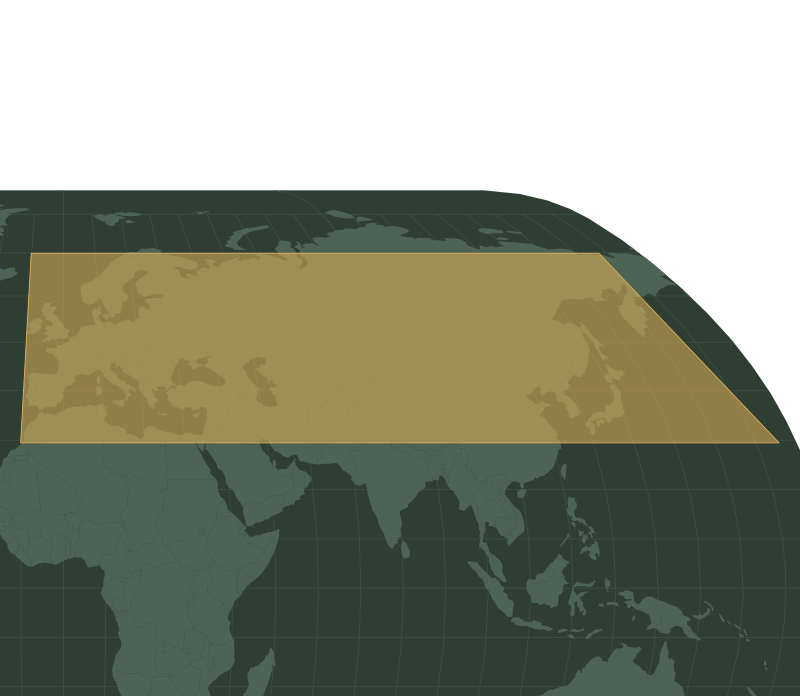

Molécula · Psicoactivo
Muscimol
5-aminometil-isoxazol-3-ol
El muscimol es uno de los principales compuestos psicoactivos de la amanita muscaria y de la amanita pantera. Es un agonista del receptor GABA-A con efectos sedantes y alucinógenos. Se origina por descarboxilación del ácido iboténico, y su uso recreativo y de «microdosis» ha crecido en los años recientes.123
También se llamaagarina · pantherina · ácido piroiboténico
- Qué es
- Agonista GABA-A psicoactivo
- Territorio
- Hongos Amanita de zonas templadas
- Fuente
- Amanita muscaria y A. pantherina
- Mecanismo
- Agonista del receptor GABA-A
- Empieza y dura
- No aplica
- Quién guarda su memoria
- Tradiciones siberianas y micología
La sustancia
Un agonista del GABA
Es el principal componente psicoactivo de hongos Amanita como la muscaria y la pantera; en el hongo convive con muscarina en trazas, muscazona y ácido iboténico.12
En la amanita muscaria, la capa justo bajo la piel del sombrero contiene la mayor cantidad de muscimol.1
El ácido iboténico actúa como profármaco: se convierte en muscimol al ingerir o secar el hongo.1
Ficha descriptiva: sin preparación ni dosis.
- Clase
- Agonista GABA-A
- Fuentes
- Amanita muscaria, A. pantherina
- Precursor
- Ácido iboténico
- Efectos
- Sedantes y alucinógenos
Memoria e historia
De la tradición a la tendencia
Históricamente se ha usado muy poco como droga recreativa, pero hacia mediados de los años 2020 han aumentado el uso recreativo y la «microdosis» con fines terapéuticos declarados en Estados Unidos y Europa.2
Los efectos de la intoxicación por amanita dependen de varios compuestos, y su historia cultural se trata en la ficha de la amanita muscaria.
En el tiempo
Aumento del interés recreativo y de microdosis
Sus nombres
Contexto y cuidado
Origen y contexto

Históricamente se ha usado muy poco como droga recreativa, pero hacia mediados de los años 2020 han aumentado el uso recreativo y la «microdosis» con fines terapéuticos declarados en Estados Unidos y Europa.2
Qué ayuda
- Informarse en fuentes fiables.
- Distinguir investigación, experiencia y uso regulado.
- Respetar los marcos legales y clínicos.
Química y mecanismo
Un agonista GABA-A
Es un potente agonista del receptor GABA-A, el receptor del principal neurotransmisor inhibidor del cerebro, con afinidad muy alta por GABA-A delta.3
También es agonista parcial de GABA-A rho, y su abanico de efectos resulta de esa combinación.3
Una parte se excreta sin metabolizar en la orina.3
La experiencia
Lo que se describe
Se describe como sedante y alucinógeno.2
Los textos divulgativos añaden que el hongo debe consumirse con precaución y preparado correctamente para reducir las náuseas.1
Investigación
Qué se ha estudiado
El muscimol llegó a un ensayo clínico de fase I para epilepsia, que se interrumpió.3
No hay uso clínico establecido.
Alcance de estos datosFarmacología básica; un ensayo de fase I interrumpido.
Con cuidado
Lo que conviene saber antes
Para seguir
Libros y medicinas emparentadas
Fuentes
De dónde sale cada dato
- Wikipedia. Muscimol. wikipedia.com/wiki/Muscimol.
- Wikiwand. Muscimol. wikiwand.com/en/articles/Muscimol.
- Wikipedia (borrador). Muscimol, farmacología y ensayo de fase I. en.wikipedia.com/wiki/User:Jclay3/sandbox/chm275.
- Mapa APDER, con datos de Natural Earth · dominio público
- Dibujos de moléculas APDER
Última revisión: 24 de noviembre de 2026. Si ves un error, escríbenos a info@apder.org.